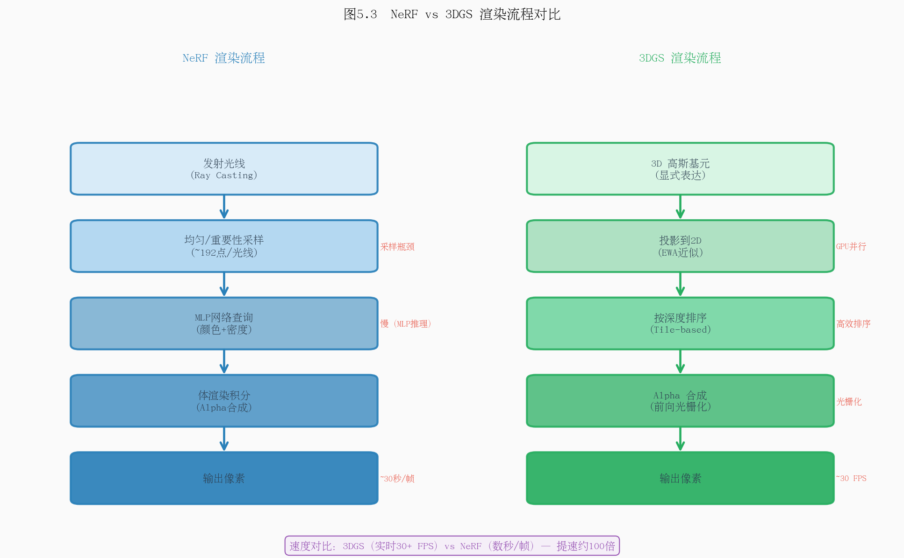
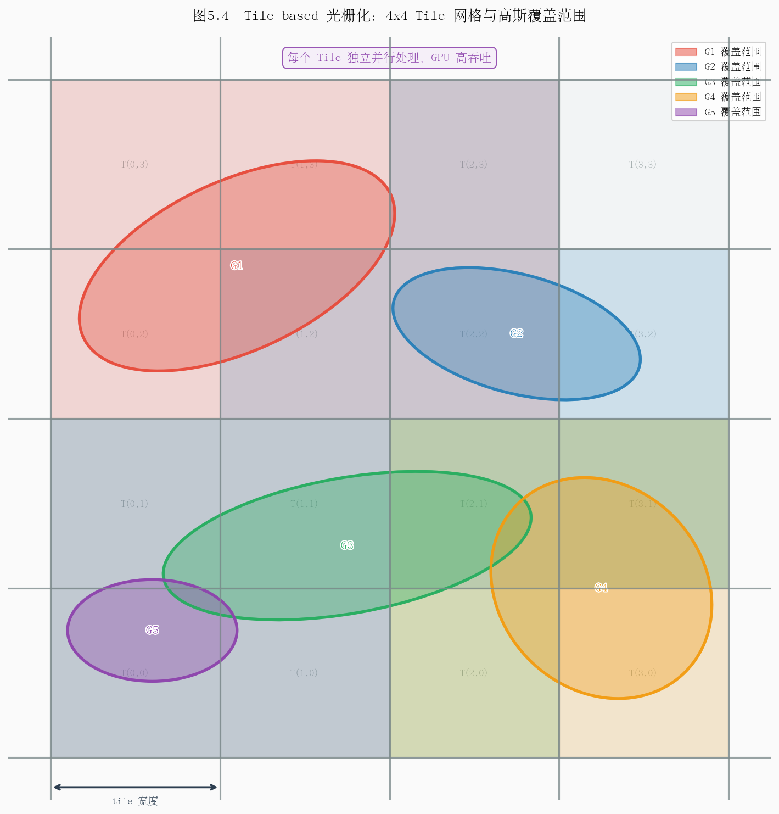

第五章：体渲染与 Alpha 合成
本章系统讲解体渲染的数学基础，从连续积分到离散 Alpha 合成，再到 NeRF 与 3DGS 两种截然不同的渲染实现路径，最后阐明可微渲染如何为场景参数优化提供梯度信号。
5.1 体渲染方程直觉推导
5.1.1 光线在介质中的传播
考虑一条从相机出发、沿方向 $\mathbf{d}$ 传播的光线：
$$\mathbf{r}(t) = \mathbf{o} + t\,\mathbf{d}, \quad t \in [t_{\text{near}},\, t_{\text{far}}]$$
其中： - $\mathbf{o} \in \mathbb{R}^3$：光线起点（相机光心位置） - $\mathbf{d} \in \mathbb{R}^3$：单位方向向量 - $t$：沿光线方向的参数（可理解为"深度"） - $t_{\text{near}},\, t_{\text{far}}$：近截面与远截面距离
光线在传播过程中会与介质中的粒子（尘埃、烟雾、半透明物体）发生三种基本交互：
| 现象 | 效果 | 物理描述 |
|---|---|---|
| 吸收（Absorption） | 能量损失 | 粒子将光能转化为热能 |
| 散射（Scattering） | 方向改变 | 光被偏转到其他方向（含外散射 out-scattering） |
| 自发光（Emission） | 能量增加 | 介质本身发出辐射（如火焰、荧光） |
在神经辐射场与高斯散射（3DGS）领域，吸收和自发光是建模的核心，散射通常被简化处理。
5.1.2 消光系数与透射率
定义消光系数（extinction coefficient / volume density）$\sigma(\mathbf{r}(t)) \geq 0$，表示单位路径长度内光线被遮挡的概率密度。
光线从起点 $t=0$ 传播到位置 $t$，未被遮挡的概率（即透射率）为：
$$\boxed{T(t) = \exp\!\left(-\int_0^t \sigma\!\left(\mathbf{r}(s)\right) ds\right)}$$
其中： - $T(t) \in [0, 1]$：到达位置 $t$ 时光线仍然存活的比例 - $\sigma(\mathbf{r}(s))$：路径上 $s$ 处的体密度 - 积分 $\int_0^t \sigma\, ds$ 称为光学深度（optical depth），记为 $\tau(t)$
直觉理解：若介质均匀（$\sigma$ 为常数），则 $T(t) = e^{-\sigma t}$，即典型的 Beer-Lambert 衰减定律。密度越大、路径越长，透射率越接近 0（光线被完全遮挡）。
5.1.3 辐射传输方程
沿光线方向 $\mathbf{d}$，辐射亮度 $L(\mathbf{r}(t), \mathbf{d})$ 的微分变化为：
$$\frac{dL}{dt} = -\sigma(t)\, L(t) + \sigma(t)\, c(t)$$
其中 $c(t) = c(\mathbf{r}(t), \mathbf{d})$ 是位置 $t$ 处向 $\mathbf{d}$ 方向辐射的颜色（自发光或散射入射光）。
对上式沿 $[t_{\text{near}}, t_{\text{far}}]$ 积分，得到像素的最终颜色：
$$\boxed{C(\mathbf{r}) = \int_{t_{\text{near}}}^{t_{\text{far}}} T(t)\, \sigma(\mathbf{r}(t))\, c(\mathbf{r}(t), \mathbf{d})\, dt}$$
其中： - $C(\mathbf{r}) \in \mathbb{R}^3$：像素最终渲染颜色（RGB） - $T(t)$：从起点到 $t$ 的透射率，表示此处粒子"对像素的可见程度" - $\sigma(\mathbf{r}(t))\, dt$：位置 $t$ 处的微元"不透明度"（遮挡概率微元） - $c(\mathbf{r}(t), \mathbf{d})$：该位置的辐射颜色
直觉：整个积分可理解为薄层贡献的加权求和——每一个无穷薄的介质层贡献自己的颜色 $c(t)$，权重为"它被看见的概率" $T(t)\,\sigma(t)$；靠近相机且前方无遮挡的层贡献最大，被厚层遮挡后方的层贡献趋近于零。

图示内容：一条光线从相机出发穿过半透明介质。介质中标注多个薄层，每层标出 $\sigma_i$、$T(t_i)$、$c_i$。箭头示意光线在各层被吸收/散射的过程，最终汇聚为像素颜色。右侧附透射率曲线 $T(t)$ 随深度单调递减的示意图。
思考题 5.1
- 若介质中 $\sigma \equiv 0$（完全透明），体渲染方程退化为什么？此时像素颜色由什么决定？
- 透射率 $T(t)$ 满足 $T(0) = 1$ 且 $T(t) \leq T(s)$（$t \geq s$），请用物理语言解释这一单调性。
- Beer-Lambert 定律 $I = I_0 e^{-\sigma l}$ 是体渲染透射率的特例，试推导其对应的 $\sigma$ 和 $l$ 含义。
5.2 离散近似与 Alpha 合成
5.2.1 将连续积分离散化
连续体渲染积分在实际计算中无法直接求解，需要对光线进行离散采样。将 $[t_{\text{near}}, t_{\text{far}}]$ 划分为 $N$ 个区间，第 $i$ 个采样点位于 $t_i$，对应区间长度为：
$$\delta_i = t_{i+1} - t_i$$
在每个区间内假设密度和颜色恒定（分段常数近似），则第 $i$ 个区间的局部透射率为：
$$\hat{T}_i = \exp(-\sigma_i \delta_i)$$
对应区间的 Alpha 值（不透明度）定义为：
$$\boxed{\alpha_i = 1 - e^{-\sigma_i \delta_i}}$$
其中： - $\sigma_i \geq 0$：第 $i$ 个采样点的体密度 - $\delta_i > 0$：对应的步长（区间宽度） - $\alpha_i \in [0, 1]$：该层"遮挡"光线的概率
物理含义：$\alpha_i$ 是光线穿过第 $i$ 层时被吸收的概率；$1 - \alpha_i = e^{-\sigma_i \delta_i}$ 是穿透该层的概率。当 $\sigma_i \delta_i \to 0$（极薄层），$\alpha_i \approx \sigma_i \delta_i$（线性近似）；当 $\sigma_i \delta_i \to \infty$，$\alpha_i \to 1$（完全不透明）。
5.2.2 前向 Alpha 合成公式
定义从相机到第 $i$ 个采样点的累积透射率（前 $i-1$ 层均未遮挡的概率）：
$$T_i = \prod_{j=1}^{i-1} (1 - \alpha_j) = \prod_{j=1}^{i-1} e^{-\sigma_j \delta_j}$$
其中 $T_1 = 1$（第一层之前无遮挡）。最终像素颜色的离散近似为：
$$\boxed{C = \sum_{i=1}^{N} T_i\, \alpha_i\, c_i}$$
其中： - $T_i$：到达第 $i$ 层时光线仍存活的概率（前景遮挡累积效果） - $\alpha_i$：第 $i$ 层的不透明度 - $c_i \in \mathbb{R}^3$：第 $i$ 层的 RGB 颜色 - $T_i \alpha_i$：第 $i$ 层对最终像素的有效权重
类似地，可计算累积不透明度（前景 Alpha）和深度期望：
$$O = \sum_{i=1}^{N} T_i\, \alpha_i, \qquad D = \sum_{i=1}^{N} T_i\, \alpha_i\, t_i$$
5.2.3 前向合成的递推形式
Alpha 合成可以按由前到后（front-to-back）的顺序递推计算，这正是渲染管线中最常用的实现方式：
$$C_{\text{acc}}^{(i)} = C_{\text{acc}}^{(i-1)} + T_i\, \alpha_i\, c_i, \qquad T_{i+1} = T_i\, (1 - \alpha_i)$$
初始条件：$C_{\text{acc}}^{(0)} = \mathbf{0}$，$T_1 = 1$。
当累积透射率 $T_i < \epsilon$（如 $\epsilon = 0.0001$）时，可提前终止——后续层的贡献可忽略不计，这是重要的早退（early termination）优化。

图示内容：从左到右展示前向 Alpha 合成的逐层叠加过程。共 5 层（$i=1,\ldots,5$），每层显示对应的颜色方块 $c_i$、不透明度 $\alpha_i$（以方块透明度直观表示）、累积透射率 $T_i$（数值递减）及当前合成结果 $C_{\text{acc}}$。底部附权重分布柱状图 $T_i \alpha_i$，展示前层贡献大、后层贡献衰减的规律。
思考题 5.2
- 当所有采样点的 $\sigma_i \to \infty$（即第一个非零密度层完全不透明），证明 Alpha 合成退化为表面渲染（只取第一个可见点的颜色）。
- 若将采样顺序颠倒（由后向前），能否得到正确结果？"由后向前"合成公式（Porter-Duff over 算子）与"由前向后"有何等价关系？
- 步长 $\delta_i$ 不均匀时，对 $\alpha_i = 1 - e^{-\sigma_i \delta_i}$ 的精度有何影响？如何通过更密集采样减少离散化误差？
5.3 NeRF 的体渲染实现
5.3.1 网络结构与输入输出
NeRF（Neural Radiance Field）用一个多层感知机（MLP）隐式表示整个场景：
$$F_\Theta: (\mathbf{x}, \mathbf{d}) \mapsto (\sigma, \mathbf{c})$$
其中： - $\mathbf{x} = (x, y, z) \in \mathbb{R}^3$：三维空间坐标 - $\mathbf{d} = (\theta, \phi) \in \mathbb{R}^2$：视角方向（球坐标或单位向量） - $\sigma \geq 0$：体密度（与视角无关，先由 $\mathbf{x}$ 预测） - $\mathbf{c} = (r, g, b) \in [0,1]^3$：辐射颜色（依赖视角，捕捉镜面反射）
为避免 MLP 偏好低频函数（无法拟合高频细节），输入坐标经位置编码（Positional Encoding）升维：
$$\gamma(p) = \left(\sin(2^0 \pi p),\, \cos(2^0 \pi p),\, \ldots,\, \sin(2^{L-1} \pi p),\, \cos(2^{L-1} \pi p)\right)$$
对 $\mathbf{x}$ 取 $L=10$ 个频率（60 维），对 $\mathbf{d}$ 取 $L=4$ 个频率（24 维）。
5.3.2 层次采样策略
单纯在 $[t_{\text{near}}, t_{\text{far}}]$ 均匀采样效率低——大部分空区域密度为零。NeRF 采用粗-精两阶段采样（Coarse-to-Fine）：
粗网络（Coarse）：均匀采样 $N_c = 64$ 个点，获得初步颜色和沿光线的权重分布：
$$w_i = T_i\, \alpha_i, \qquad \hat{w}_i = \frac{w_i}{\sum_j w_j}$$
精网络（Fine）：将 $\hat{w}_i$ 视为概率分布，用逆 CDF 采样重采样 $N_f = 128$ 个点，聚焦于密度较高的区域（重要性采样）。最终合并两组共 $N_c + N_f = 192$ 个点，用精网络渲染最终颜色。
5.3.3 渲染速度瓶颈
NeRF 的渲染效率受限于以下因素：
| 瓶颈 | 量化 | 来源 |
|---|---|---|
| 每像素 MLP 查询次数 | $\sim 192$ 次 | 每个采样点一次前向传播 |
| MLP 参数量 | $\sim 5\text{M}$ | 8 层全连接，宽度 256 |
| 单帧渲染时间 | $\sim 30$ 秒（800$\times$800） | GPU 串行推理 |
| 训练时间 | $\sim 1$–$2$ 天 | 梯度回传+采样 |
每像素需要数百次 MLP 前向传播，是导致渲染速度慢的根本原因。后续加速工作（Instant-NGP、Plenoxels、3DGS 等）均致力于消除或替换这一瓶颈。

图示内容：左侧为 NeRF 流程——光线采样点 $\to$ 位置编码 $\to$ MLP 前向传播（标注每像素 $\sim$192 次）$\to$ 体渲染积分 $\to$ 像素颜色。右侧为 3DGS 流程——三维高斯参数 $\to$ 投影到屏幕 $\to$ 分 Tile 光栅化 $\to$ Alpha 合成 $\to$ 像素颜色。两列以箭头对比，突出 MLP 查询（慢）vs. 光栅化（快）的本质差异。关键指标标注：NeRF 渲染 30s/帧 vs. 3DGS 实时 30fps。
思考题 5.3
- NeRF 中体密度 $\sigma$ 设计为只与位置 $\mathbf{x}$ 相关（而非视角 $\mathbf{d}$），颜色 $\mathbf{c}$ 与视角相关，这一设计有何物理依据？
- 层次采样的"重要性采样"如何保证最终颜色估计的无偏性？与均匀采样相比方差有何变化？
- 若将 MLP 替换为查找表（voxel grid），渲染速度如何变化？内存消耗如何？这是 Plenoxels 的核心思路，试分析其优缺点。
5.4 3DGS 的渲染公式推导
5.4.1 三维高斯的定义
3DGS 用 $N$ 个三维各向异性高斯显式表示场景，第 $k$ 个高斯的参数为：
$$\mathcal{G}_k = \left\{\boldsymbol{\mu}_k,\, \Sigma_k,\, \mathbf{c}_k(\mathbf{d}),\, o_k\right\}$$
其中： - $\boldsymbol{\mu}_k \in \mathbb{R}^3$：高斯中心位置 - $\Sigma_k \in \mathbb{R}^{3\times 3}$（正定）：协方差矩阵，控制形状和方向 - $\mathbf{c}_k(\mathbf{d})$：视角相关颜色（用球谐函数表示） - $o_k \in [0,1]$：基础不透明度（可学习标量）
协方差矩阵分解为 $\Sigma_k = R_k S_k S_k^T R_k^T$（$R_k$ 为旋转矩阵，$S_k = \text{diag}(s_x, s_y, s_z)$ 为缩放矩阵），以确保正定性并便于梯度优化。
5.4.2 三维高斯投影到屏幕
给定视图变换矩阵 $W$（世界坐标到相机坐标），三维高斯投影为二维高斯的近似推导如下。
设 $\boldsymbol{\mu}_k' = W \boldsymbol{\mu}_k$ 为相机坐标系中的中心，利用EWA（Elliptical Weighted Average）近似，投影后的二维协方差为：
$$\boxed{\Sigma_k^{2D} = J W \Sigma_k W^T J^T}$$
其中： - $J \in \mathbb{R}^{2\times 3}$：投影变换（透视除法）的雅可比矩阵（在 $\boldsymbol{\mu}_k'$ 处线性化） - $W$：视图变换矩阵（旋转+平移） - $\Sigma_k^{2D} \in \mathbb{R}^{2\times 2}$：屏幕空间协方差
屏幕空间的二维高斯为：
$$\mathcal{G}_k^{2D}(\mathbf{x}) = \exp\!\left(-\frac{1}{2}(\mathbf{x} - \boldsymbol{\mu}_k^{2D})^T (\Sigma_k^{2D})^{-1} (\mathbf{x} - \boldsymbol{\mu}_k^{2D})\right)$$
其中 $\mathbf{x} \in \mathbb{R}^2$ 为像素坐标，$\boldsymbol{\mu}_k^{2D}$ 为投影后的二维中心。
5.4.3 每像素贡献与深度排序
对于像素 $\mathbf{x}$，第 $k$ 个高斯贡献的有效 Alpha 值为：
$$\alpha_k(\mathbf{x}) = o_k \cdot \mathcal{G}_k^{2D}(\mathbf{x})$$
其中： - $o_k$：学习到的基础不透明度 - $\mathcal{G}_k^{2D}(\mathbf{x})$：二维高斯在像素 $\mathbf{x}$ 处的响应值（空间衰减权重）
为正确渲染遮挡关系，所有高斯需按深度（相机空间 $z$ 值）从小到大排序（由近到远），然后执行前向 Alpha 合成：
$$C(\mathbf{x}) = \sum_{k \in \mathcal{S}(\mathbf{x})} T_k(\mathbf{x})\, \alpha_k(\mathbf{x})\, \mathbf{c}_k(\mathbf{d})$$
其中 $T_k(\mathbf{x}) = \prod_{j < k, j \in \mathcal{S}(\mathbf{x})} (1 - \alpha_j(\mathbf{x}))$ 为累积透射率，$\mathcal{S}(\mathbf{x})$ 为覆盖像素 $\mathbf{x}$ 的高斯集合。
5.4.4 Tile-Based 光栅化
直接对所有像素遍历所有 $N$ 个高斯的复杂度为 $O(N \cdot H \cdot W)$，难以实时渲染。3DGS 采用 Tile-Based 光栅化大幅加速：
步骤 1：屏幕分块（Tiling）
将屏幕划分为 $16 \times 16$ 像素的 Tile，每个高斯投影后计算其覆盖的 Tile 范围（包围盒与各 Tile 的相交检测）。
步骤 2：生成键值对并排序
为每个（高斯, Tile）对生成一个 64 位键：
$$\text{key} = \underbrace{\text{Tile ID}}_{32\text{-bit}} \| \underbrace{\text{Depth（浮点转整型）}}_{32\text{-bit}}$$
使用 GPU 并行基数排序（Radix Sort）对所有键排序，时间复杂度 $O(M \log M)$（$M$ 为总（高斯, Tile）对数，$M \ll N \cdot \text{Tiles}$）。
步骤 3：逐 Tile 并行 Alpha 合成
排序后，属于同一 Tile 的高斯已按深度有序。为每个 Tile 启动一个 CUDA 线程块，各线程处理块内一个像素，协作地从共享内存读取高斯数据，执行前向 Alpha 合成直至早退。
整体渲染复杂度降至 $O(M)$（$M \propto N$ 且与分辨率弱相关），实现实时渲染（30+ fps）。

图示内容：左上角为投影后的屏幕，用网格划分 $16\times16$ 的 Tile，若干椭圆形二维高斯跨越多个 Tile。左下角展示键值对生成：每个（高斯, Tile）配对标注 TileID 和 Depth 编码的 64 位键。右侧展示 GPU 并行架构：每个 Tile 对应一个 CUDA Block，Block 内各线程处理一个像素，从共享内存（Shared Memory）批量读取排好序的高斯列表，执行 Alpha 合成。底部附伪代码：`for k in sorted_gaussians[tile]: if T < ε: break; C += T * α_k * c_k; T *= (1 - α_k)`。
思考题 5.4
- 3DGS 的深度排序是全局排序（所有高斯按深度排序），而非针对每条光线独立排序。这种近似在什么情况下会产生渲染错误？（提示：考虑两个相互穿插的半透明高斯）
- Tile 大小设为 $16\times16$ 的理由是什么？若改为 $8\times8$ 或 $32\times32$，对性能有何影响？
- 二维高斯的协方差 $\Sigma_k^{2D}$ 随相机位置变化（透视投影的雅可比 $J$ 与距离相关），这对训练过程中的梯度计算有何意义？
5.5 可微渲染意义
5.5.1 可微渲染的基本框架
可微渲染（Differentiable Rendering）的核心思想：将渲染过程设计为关于场景参数可微的函数，从而可以通过反向传播将像素级的重建误差梯度传递回场景参数。
给定相机位姿 $\{\mathcal{P}_m\}_{m=1}^{M}$ 和对应的真实图像 $\{I_m^{\text{gt}}\}$，优化目标为：
$$\min_\Theta \mathcal{L}(\Theta) = \sum_{m=1}^{M} \sum_{\mathbf{x} \in \text{pixels}} \ell\!\left(C_m(\mathbf{x};\Theta),\, I_m^{\text{gt}}(\mathbf{x})\right)$$
其中： - $\Theta$：全体场景参数（NeRF 中为 MLP 权重；3DGS 中为所有高斯的 $\boldsymbol{\mu}_k, \Sigma_k, \mathbf{c}_k, o_k$） - $C_m(\mathbf{x};\Theta)$：由参数 $\Theta$ 渲染出的第 $m$ 个视角像素 $\mathbf{x}$ 的颜色 - $\ell(\cdot, \cdot)$：像素损失函数（如 L1、L2 或 SSIM）
5.5.2 梯度如何驱动高斯参数更新
以 3DGS 的单个高斯参数为例，分析梯度信号的传播路径：
颜色梯度 $\nabla_{\mathbf{c}_k} \mathcal{L}$：
$$\frac{\partial \mathcal{L}}{\partial \mathbf{c}_k} = \sum_\mathbf{x} \frac{\partial \ell}{\partial C(\mathbf{x})} \cdot T_k(\mathbf{x})\, \alpha_k(\mathbf{x})$$
梯度幅值正比于该高斯对像素的有效权重 $T_k \alpha_k$——越"可见"的高斯，颜色梯度越大，更新越快。
不透明度梯度 $\nabla_{o_k} \mathcal{L}$：
$$\frac{\partial C(\mathbf{x})}{\partial o_k} = T_k(\mathbf{x})\, \mathcal{G}_k^{2D}(\mathbf{x})\, \mathbf{c}_k - \sum_{j > k,\, j \in \mathcal{S}(\mathbf{x})} T_j(\mathbf{x})\, \alpha_j(\mathbf{x})\, \mathbf{c}_j \cdot \mathcal{G}_k^{2D}(\mathbf{x})$$
第一项为"增加自身贡献"，第二项为"遮挡后续高斯"的负效应。当渲染颜色与真实颜色不符时，该梯度驱动 $o_k$ 升高或降低。
位置梯度 $\nabla_{\boldsymbol{\mu}_k} \mathcal{L}$：
$$\frac{\partial \mathcal{L}}{\partial \boldsymbol{\mu}_k} = \sum_\mathbf{x} \frac{\partial \ell}{\partial C(\mathbf{x})} \cdot T_k\, o_k \cdot \nabla_{\boldsymbol{\mu}_k}\mathcal{G}_k^{2D}(\mathbf{x})$$
其中 $\nabla_{\boldsymbol{\mu}_k}\mathcal{G}_k^{2D}$ 来自高斯中心投影位置的偏移。此梯度驱动高斯向重建误差大的区域移动。
协方差/形状梯度 $\nabla_{\Sigma_k} \mathcal{L}$：
通过 $\Sigma_k^{2D} = J W \Sigma_k W^T J^T$ 的链式法则，梯度从屏幕空间 $\Sigma_k^{2D}$ 反传至三维协方差 $\Sigma_k$，进而通过 $\Sigma_k = R S S^T R^T$ 分解传至旋转四元数 $\mathbf{q}_k$ 和缩放向量 $\mathbf{s}_k$，驱动高斯拉伸、旋转或压扁以更好拟合局部几何。
5.5.3 自适应密度控制
仅靠梯度下降无法处理高斯数量的动态调整，3DGS 引入自适应密度控制（Adaptive Density Control）机制：
| 操作 | 触发条件 | 效果 |
|---|---|---|
| 致密化（Densification） | 位置梯度 $\|\nabla_{\boldsymbol{\mu}}\mathcal{L}\|$ 超过阈值（欠重建区域） | 复制或分裂高斯，增加场景细节 |
| 克隆（Clone） | 高斯较小（覆盖面积不足） | 原地复制并沿梯度方向偏移 |
| 分裂（Split） | 高斯较大（覆盖面积过大） | 替换为两个更小的高斯 |
| 剪枝（Pruning） | $o_k < \epsilon$ 或高斯过大 | 删除冗余高斯，控制总数 |
这一机制每隔 $100$ 次迭代执行一次，使得高斯数量从初始几十万逐渐增长到最终的百万量级，在细节丰富区域自动聚集更多高斯。
5.5.4 可微渲染的全局梯度流
$$\underbrace{I^{\text{gt}}}_{\text{监督}} \xrightarrow{\ell} \underbrace{\mathcal{L}}_{\text{损失}} \xrightarrow{\nabla} \underbrace{C(\mathbf{x})}_{\text{渲染颜色}} \xrightarrow{\text{体渲染反传}} \underbrace{\alpha_k, \mathbf{c}_k}_{\text{高斯属性}} \xrightarrow{\text{投影反传}} \underbrace{\boldsymbol{\mu}_k, \Sigma_k, o_k, \mathbf{c}_k}_{\text{场景参数 }\Theta}$$
整条链路全程可微，使得多视角重建问题转化为一个标准的神经网络优化问题——只需准备多视角照片和相机位姿，梯度下降即可自动找到与所有观测一致的三维场景表示。
思考题 5.5
- 为什么可微渲染需要对所有采样点/高斯均计算梯度，而不能只对"最近表面"计算梯度？（提示：考虑半透明物体和遮挡变化的情况）
- 3DGS 的深度排序操作（排序算法）是否可微？在优化过程中，两个高斯的深度顺序发生交换时，梯度如何处理？这是否会导致优化不稳定？
- 球谐函数用于表示视角相关颜色，其阶数 $l$ 的选择（0 阶 = Lambertian，3 阶 = 16 系数）对可优化自由度和过拟合风险有何权衡？
本章小结
本章系统梳理了体渲染与 Alpha 合成的完整理论链条：
-
体渲染方程将光线穿过介质的物理过程数学化为透射率加权积分，核心公式 $C = \int T(t)\sigma c\, dt$ 奠定了所有神经渲染方法的理论基础。
-
离散 Alpha 合成将连续积分近似为 $C = \sum T_i \alpha_i c_i$（其中 $\alpha_i = 1 - e^{-\sigma_i \delta_i}$），实现了计算机可处理的前向渲染算法。
-
NeRF 用 MLP 隐式编码密度和颜色，通过层次采样提高效率，但每像素数百次 MLP 查询导致渲染速度慢（~30s/帧）。
-
3DGS 将场景显式表示为三维高斯，通过 EWA 投影获得二维高斯，借助 Tile-Based GPU 光栅化和快速基数排序实现实时渲染（30+ fps），同时保持体渲染的 Alpha 合成语义。
-
可微渲染使梯度从像素误差反传至所有场景参数，配合自适应密度控制，将三维重建问题归纳为端到端的神经网络优化。
| 维度 | NeRF | 3DGS |
|---|---|---|
| 场景表示 | 隐式 MLP | 显式三维高斯 |
| 渲染方式 | 光线步进+体渲染 | Tile 光栅化+Alpha 合成 |
| 渲染速度 | ~30s/帧 | ~30fps（实时） |
| 训练时间 | ~1–2 天 | ~30–60 分钟 |
| 内存消耗 | ~5MB（MLP 权重） | ~300MB–1GB（高斯数据） |
| 可编辑性 | 困难 | 相对容易（显式几何） |
下一章将介绍 3DGS 的训练流程与工程实现，包括初始化、优化策略和工程加速技巧。
上一章：第四章：球谐函数与外观建模 | 下一章：第六章：3DGS 核心算法详解